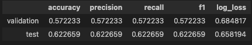
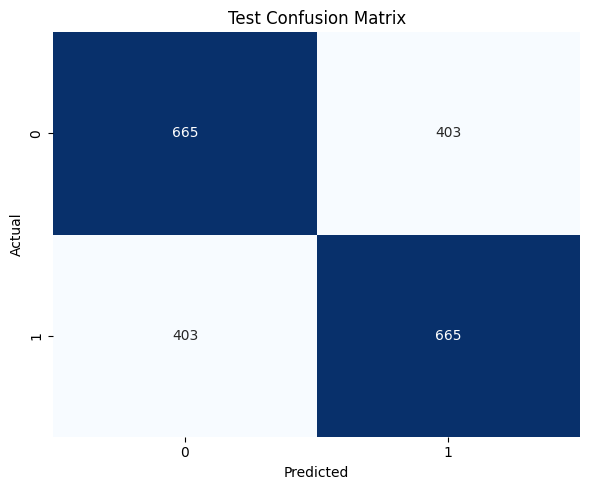
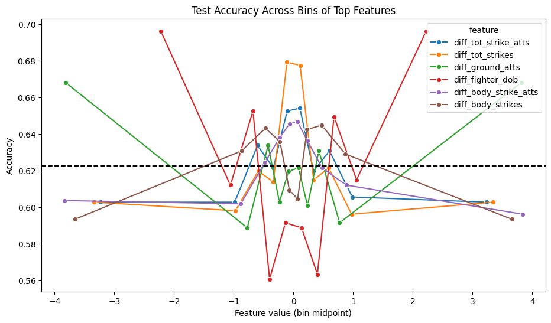
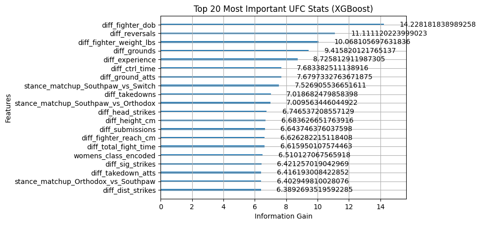

Literature Review
Louppe provides a theoretical and practical analysis of Random Forests, explaining how ensemble learning reduces variance and how impurity-based feature importance is computed [1], supporting our use of Random Forest and guiding interpretation of influential attributes. Strobl et al. show that standard Random Forest importance measures can be biased toward certain predictor types, especially when variables differ in scale or category count [2], which is important given our mixed feature types. He and Choi demonstrate that ensemble machine learning methods for sports outcome prediction can achieve strong predictive performance while maintaining interpretability [3], reinforcing the suitability of ensemble models like Random Forest for our task.
Dataset Description
The UFC Dataset is a comprehensive MMA dataset containing every recorded UFC fight along with detailed fighter statistics.
Dataset: Kaggle — UFC Dataset 2024
The dataset includes:
- Complete fight history for all UFC events
- Fight-level statistics for both competitors in each bout
- Fighter performance metrics at the time of each fight (e.g., strikes landed, takedowns, submissions)
- Fighter profiles with physical attributes and career records
- Aggregated career statistics reflecting most recent information
This allows us to analyze:
- How pre-fight statistics relate to fight outcomes
- Predictive modeling using stats available at the time of the fight
- Current fighter comparisons based on up-to-date profile data
Because it includes historical fight-level data and a current snapshot of fighter profiles, the dataset supports the analysis we are looking to achieve.
Problem Statement
When we debate upcoming UFC fights, we often disagree about which statistics actually matter. One of us might emphasize striking accuracy or reach; another might argue that takedown defense or experience is more important. Without a data-driven way to weigh these factors, we can’t agree on which pre-fight stats are most predictive of who wins.
The core challenge is to model fight outcomes using only pre-fight data, so the system reflects real-world constraints and gives us a shared, evidence-based way to settle our debates.
Motivation
We’re a group of sports fans who regularly watch UFC events. Half the fun is debating the fights before they start: who has the better striking, whose grappling will hold up, and whether reach or experience will make the difference. We’re always making predictions and arguing our cases like professionals. This project adds a data-driven layer to something we already love. Instead of going off gut feeling or reputation, we want to see if the numbers back up our predictions. Can striking accuracy predict outcomes? Does reach matter as much as we think? Do certain styles consistently win? By building a model using real UFC data, we’re putting our fight-night debates to the test and combining our interest in sports with machine learning in a way that’s analytical and fun.
Data Preprocessing
When looking at our data, the first thing we realized was that one of our datasets, “ufc_fighters_avg” would not be a feasible dataset to use. It contains UFC fighters' average stats from their career (i.e. strike accuracy, takedowns, etc.) as of 2024. Thus, if we were training our model on this data, it would be using information that was from the “future”. For example, if we had a fighter that fought in 2020, 2022, and 2024, using their averages from the dataset to predict the 2020 and 2022 fights would use data from future fights that was not available at the actual time of the fight. As a result, we decided to use “ufc_event_fight_stats” which has fighter stats for fights dating back to 1994. After loading the data and exploring it we did a couple of things to process and clean the data. Primarily, we realized that a fighter with control time of 0:00 was being represented as “NA” so we replaced those with “0”s to handle the missing values. We then dropped no contest fights from our dataset since these are not relevant to our goal and were deemed outliers. Next, we converted date of birth to type datetime and added a column “winner” that was encoded to have 1 if fighter 1 won and 0 if fighter 2 won. To handle categorical inputs like weight class, we encoded the weight class to an integer representation using the table below. Also, for stance, we created dummy variables that were 1, if the matchup was a certain combination of stances and 0 for the rest (i.e 1 for Orthodox v. Orthodox and 0 for Orthodox v. Southpaw and the rest of the possible combinations) which wraps up the initial cleaning process.
encodes `weight class` as follows:
| Encoding | Men's | Women's |
|---|---|---|
| 0 | Flyweight | Flyweight |
| 1 | Bantamweight | Strawweight |
| 2 | Featherweight | Bantamweight |
| 3 | Lightweight | Featherweight |
| 4 | Welterweight | Other |
| 5 | Middleweight | |
| 6 | Light Heavyweight | |
| 7 | Heavyweight | |
| 8 | Catch Weight | |
| 9 | Open Weight | |
| 10 | Other |
Because we are now using a dataset with only fight data, we had to calculate our own averages for fighters prefight. Essentially, if a fighter fought it in 2020, 2022, and 2024. Their 2022 fight should contain the values from the 2020 fight and the 2024 fight should use the averages from the 2020 and 2022 fights. To do this, we had to join “ufc_event_fight_stats” and “ufc_events” to get the chronological order of each fight. This ensured that only information available before a fight occurred would be used in prediction. We then calculated cumulative statistics for each fighter across their previous fights, including metrics such as strikes, knockdowns, takedowns, submissions, and control time. These cumulative values were shifted so that the statistics for each fight only included data from earlier fights. We also calculated each fighter’s prior record and experience, tracking cumulative wins, losses, and draws before each fight. Using these cumulative totals, we created pre-fight averages by dividing statistics by the number of previous fights. If a fighter had no prior fights, the averages were set to zero. We also added fighter attributes such as reach, height, stance (which we encoded), and date of birth, which allowed us to calculate the fighter’s age at the time of the fight. Then, we dropped fights where a fighter's age, stance, reach or height was unknown or they had less than 1 year of experience.
Next, we generated difference-based features representing the matchup between fighters by subtracting fighter 2’s values from fighter 1’s values (e.g., reach difference, age difference, and strike accuracy difference). After creating these features, we removed unnecessary columns such as fighter names, IDs, and event metadata, leaving a dataset of numeric features along with the encoded winner variable for model training in an attempt to reduce the number of features. We also realized that fighter 1 won 64.59% of the time. Since we did not want our model to be biased to fighter 1, we duplicated the data, switching the fighters for symmetry. This gets us to a starting point to train and test our first models.
Logistic Regression
Logistic Regression is a supervised machine learning model used for classification. For our UFC fight prediction model, we selected it as our baseline algorithm because it is good for determining binary classifications, it outputs a probabilistic value a specific fighter would win a bout, and it is fast and does not require much computational power to train and run.
For this project, we use it to predict whether Fighter 1 (class 0) or Fighter 2 (class 1) will win the matchup. Unlike more complex models, logistic regression allows us to easily examine feature coefficients to understand the relationship between our engineered features (such as age difference, reach difference, and strike accuracy difference) and the likelihood of a victory. Furthermore, rather than just outputting a strict win/loss classification, the logistic function maps the output to a probability between 0 and 1. This probabilistic output is particularly valuable in the context of sports predictions, as it provides a measure of confidence for each predicted matchup rather than a simple categorical guess.
Implementation and Training
We built the model using Python's scikit-learn library, and used a Pipeline to chain our preprocessed data into a valuable baseline machine learning model using StandardScaler and LogisticRegression. Because logistic regression is sensitive to the scale of the input data and our dataset contains variables with different ranges, we used StandardScaler to normalize the processed data before passing it to LogisticRegression.
The model was trained on the symmetrized dataset discussed in the preprocessing section. By duplicating the data and switching the fighters, we ensured the logistic regression model learned the underlying physical and statistical advantages rather than defaulting to a biased baseline that favors fighter 1 or 2.
Model Analysis and Evaluation
To evaluate the model's performance beyond standard accuracy, we calculated several classification metrics and analyzed the probabilistic outputs.The baseline logistic regression model yielded the following results:


The accuracy, precision, recall, f1 score and confusion matrix confirms a balanced performance. The model correctly predicted 665 true positives (Fighter 1 wins) and 665 true negatives (Fighter 2 wins). It also produced the same amount of false positives and false negatives (403), where the model incorrectly chose the bout outcome. This balanced error is a direct result of our dataset duplication and symmetrization step during preprocessing, ensuring the model doesn't inherently favor one side and also .
To evaluate the quality of the model's predicted probabilities, we utilized Log-Loss (Cross-Entropy Loss):
- ● Log-Loss: We recorded a Log-Loss of 0.658194. Because a completely random binary guess yields a baseline log-loss of approximately 0.693, a score of 0.658194 demonstrates that the model has successfully learned underlying patterns and is assigning higher probabilities to the correct outcomes. While it establishes a solid baseline, the log-loss score leaves lots of room for improvement that we aim to capture with more complex algorithms.
Finally, to better understand where our model excels and where it struggles, we analyzed the test accuracy across different bins (all equally sized) of our top features, where a bin is a range of values used to group our continuous values. Instead of relying solely on a single global accuracy score, we segmented the test data based on the magnitude of the difference between fighters for key metrics.

The results from grouping these features reveal an interesting, split pattern depending on the type of statistic. For features like age (diff_fighter_dob) and ground game (diff_ground_atts), the model behaves exactly as expected: when there is a massive gap between the fighters, the model easily picks the winner, but when they are evenly matched near zero, the accuracy drops. However, the striking metrics (total strikes or body strikes) show the exact opposite trend. For these features, the model is actually most accurate when the fighters have very similar historical striking numbers. When there are massive differences in striking, the model's accuracy drops. This could be due to differences in fighter styles which are historically harder matchups to predict. Overall, this shows that our logistic regression algorithm is highly responsive to the magnitude of the differences between fighters, recognizing that mismatches in age are strong predictors of victory, while extreme differences in striking volume make fights harder to call.
XGBoost
XGBoost is a supervised machine learning algorithm built on the gradient boosted decision tree model. For our UFC fight prediction model, we decided to select it as an upgrade from our logistic regression baseline because it captures the non-linear relationships between features. Additionally, it’s robust to outliers and does not require feature scaling, and even includes built-in regularization that prevents overfitting. Like logistic regression, it produces class probabilities rather than strict binary predictions, preserving the probabilistic value of our model's output.
For this project, we use it to predict whether Fighter 1 (class 0) or Fighter 2 (class 1) will win the matchup. Unlike logistic regression, which assumes a linear boundary between classes, XGBoost builds an ensemble of decision trees sequentially, where each new tree corrects the residual errors of the previous one. This allows the model to detect complex, higher-order interactions between our engineered features — such as combined disadvantages in reach, age, and striking accuracy — that a linear model may miss.
Implementation and Training
We built the model using Python's xgboost library with the XGBClassifier interface. Because XGBoost is a tree-based method, it is invariant to the scale of input features, so no standardization step was required. The model was trained on the same symmetrized dataset used for logistic regression, where duplicating fights and swapping fighters ensures the model learns underlying physical and statistical advantages rather than a positional bias toward Fighter 1 or Fighter 2.
To find strong starting parameters, we used Optuna to run 100 trials of Bayesian hyperparameter optimization over the search space for n_estimators, learning_rate, max_depth, subsample, and colsample_bytree. However, the hand-tuned baseline parameters consistently matched or outperformed the Optuna results on the validation set, so we proceeded with those.
The final model used the following configuration:
- ● n_estimators=500 — maximum number of trees to build
- ● learning_rate=0.05 — how aggressively each tree corrects the last
- ● max_depth=5 — limits tree complexity to reduce overfitting
- ● subsample=0.649 — trains each tree on a random 65% of rows
- ● colsample_bytree=0.649 — trains each tree on a random 65% of features
- ● early_stopping_rounds=20 — halts training if validation loss doesn't improve for 20 consecutive rounds
Early stopping triggered at tree 74 out of the 500 maximum, at which point the validation log-loss plateaued. This prevented unnecessary training and overfitting to the training set.
Model Analysis and Evaluation
We evaluated the model's performance by calculating classification metrics on the held-out test set and analyzed feature importances to understand what the model learned. The accuracy, precision, recall, and F1 scores confirm a balanced performance across both classes, with no meaningful bias toward predicting Fighter 1 or Fighter 2. This is again a direct result of our dataset symmetrization step during preprocessing. The model achieved 63.90% test accuracy, a modest improvement over the logistic regression baseline, demonstrating that the ensemble approach is capturing some non-linear signal that a linear model cannot.
To further assess prediction quality, we compared training versus validation log-loss throughout training. The training log-loss converged to 0.575 while the validation log-loss settled at 0.653. The gap between these two values indicates a degree of overfitting. The model learned the training data slightly better than it generalized but our early stopping prevented this from growing further. The validation log-loss of 0.653 remains below the random-guess baseline of ~0.693, confirming the model has extracted real predictive signal from the data.
Finally, we analyzed feature importance using information gain, which measures how much each feature reduces uncertainty across all the splits it is used in. Unlike logistic regression coefficients, which only capture linear contributions, XGBoost's importance reflects a feature's overall usefulness across all trees, including interactions with other features. The top 20 most important features are visualized in the feature importance plot, providing insight into which physical and statistical differences between fighters are most predictive of fight outcomes.

References
- [1] G. Louppe, Understanding Random Forests: From Theory to Practice, arXiv:1407.7502, Jul. 2014. [Online]. Available: https://arxiv.org/abs/1407.7502
- [2] C. Strobl, A.-L. Boulesteix, A. Zeileis, and T. Hothorn, “Bias in random forest variable importance measures: Illustrations, sources and a solution,” BMC Bioinformatics, vol. 8, no. 25, 2007, doi: 10.1186/1471-2105-8-25.
- [3] Y. He and J. Choi, “Stacked ensemble model for NBA game outcome prediction,” Scientific Reports, vol. 15, 2025, doi: 10.1038/s41598-025-13657-1.
| GANTT CHART | UFC Prediction Model Project Group 59 Timeline | ||||
| TASK TITLE | TASK OWNER | START DATE | DUE DATE | DURATION |
Jan-26
Feb-26
Mar-26
Apr-26
May-26
M T W T F S S M T W T F S S M T W T F S S M T W T F S S M T W T F S S
|
|---|---|---|---|---|---|
| Project Proposal | |||||
| Project Team Composition | All | 1/17/26 | 2/2/26 | 15 | |
| Project Proposal | All | 1/1/26 | 2/23/26 | 54 | |
| Introduction & Background | John Tillman | 2/2/26 | 2/23/26 | 21 | |
| Problem Definition | Max Pargman | 2/2/26 | 2/23/26 | 21 | |
| Methods | Connor Mcilhinney & Andrew Mattei | 2/2/26 | 2/23/26 | 21 | |
| Potential Datasets | Connor Mcilhinney & Andrew Mattei | 2/2/26 | 2/23/26 | 21 | |
| Potential Results & Discussion | Rajan Kadaba | 2/2/26 | 2/23/26 | 21 | |
| Video Creation & Recording | All | 2/10/26 | 2/23/26 | 13 | |
| Code Repo | Connor Mcilhinney | 2/10/26 | 2/23/26 | 13 | |
| Midterm Report | |||||
| Model 1 (M1) Design & Selection | All | 2/17/26 | 2/27/26 | 10 | |
| M1 Data Cleaning | Max Pargman | 2/17/26 | 2/27/26 | 10 | |
| M1 Data Visualization | Rajan Kadaba | 2/17/26 | 2/27/26 | 10 | |
| M1 Feature Reduction | Connor Mcilhinney | 2/17/26 | 2/27/26 | 10 | |
| M1 Implementation & Coding | Andrew Mattei & Connor Mcilhinney | 2/28/26 | 3/17/26 | 19 | |
| M1 Results Evaluation | All | 3/18/26 | 3/20/26 | 2 | |
| Model 2 (M2) Design & Selection | All | 2/28/26 | 3/6/26 | 8 | |
| M2 Data Cleaning | John Tillman | 2/28/26 | 3/6/26 | 8 | |
| M2 Data Visualization | Connor Mcilhinney | 2/28/26 | 3/6/26 | 8 | |
| M2 Implementation & Coding | Max Pargman & Rajan Kadaba | 3/7/26 | 3/17/26 | 10 | |
| M2 Results Evaluation | All | 3/18/26 | 3/20/26 | 2 | |
| Midterm Report | All | 3/28/26 | 3/29/26 | 1 | |
| Final Report | |||||
| Model 3 (M3) Design & Selection | All | 3/14/26 | 3/20/26 | 6 | |
| M3 Data Cleaning | Connor Mcilhinney | 3/14/26 | 3/20/26 | 6 | |
| M3 Data Visualization | Andrew Mattei | 3/14/26 | 3/20/26 | 6 | |
| M3 Feature Reduction | Rajan Kadaba | 3/14/26 | 3/20/26 | 6 | |
| M3 Implementation & Coding | Max Pargman & John Tillman | 4/6/26 | 4/14/26 | 8 | |
| M3 Results Evaluation | All | 4/15/26 | 4/17/26 | 2 | |
| M1–M3 Comparison | All | 4/18/26 | 4/26/26 | 8 | |
| Video Creation & Recording | All | 4/18/26 | 4/26/26 | 8 | |
| Code Repo | All | 4/18/26 | 4/26/26 | 8 | |
| Final Report | All | 4/18/26 | 4/28/26 | 30 | |
Contribution Table
| Name | Contributions |
|---|---|
| Connor Mcilhinney | Data preprocessing and feature pipeline work, finding datasets, GitHub Pages, Literature Review, Idea Generation, problem statement |
| Max Pargman | Methods and Data Processing, solution brainstorming, logistics handling |
| Andrew Mattei | Programmed logistic regression model and evaluation metrics for it, wrote that section of the report |
| Rajan Kadaba | Data cleaning and feature engineering write-up, helped with feature engineering logic |
| John Tillman | Primary email contact with course mentor, created GitHub repo, results and discussion, organization, solution brainstorming |